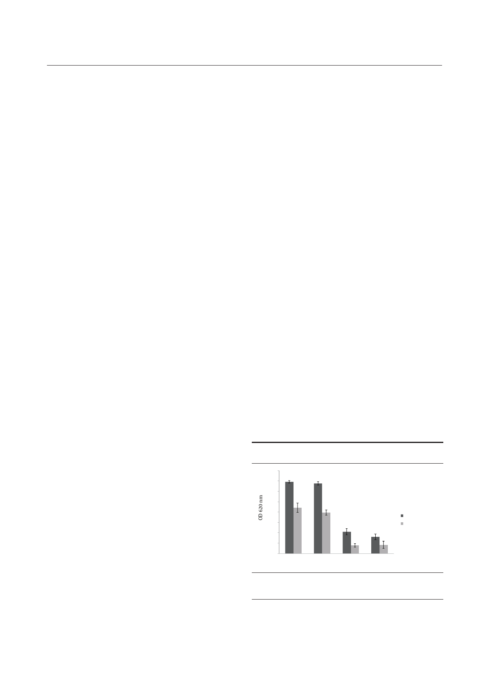

Fazly Bazzaz BS et al.
termined with a microplate reader (Awareness, UK). Each
experiment was performed in five replicate wells.
3.4. Bacterial Population Enumeration of IOL
After the aforementioned process of incubation dur-
ing which biofilms were cultivated on disk, each IOL was
washed three times gently with PBS and was transferred
to a sterile 1.5 mL microtube (LockFit; Treff, Degersheim,
Switzerland) containing 300 μL of 1 mm diameter sterile
glass beads (SGMT No. 001; USA) in 1 mL of PBS. Then the
tubes were vortexed (Velp, Germany) for 1.5 minutes at
2500 rpm in order to separate the cells from its biofilm
matrix. This regimen has been efficient by removing all
the adherent bacteria with maximum number of colony-
forming units (CFU) without affecting their viability (11).
After vortexing, the extracted bacteria were enumerated
using agar dilution plating technique. To perform it, 10
serial fold dilutions (1/10, 1/100, and 1/1000) were made
from each sample containing the dislodged bacteria and
10 microliters were seeded to calculate an accurate count
of the bacteria adhered to the lenses. Each experiment
was performed in triplicate.
3.5. Scanning Electron Microscopy
After the foregoing incubation, each IOL was gently
washed three times with PBS. First the IOLs were fixed
with 2.5% (wt/vol) glutaraldehyde in a filter-sterilized
phosphate buffer (0.1 M, pH 7.4) at room temperature for
two hours and then rinsed three times for 15 minutes in
sodium cacodylate buffer (0.1 M). Next, a second fixation
step was performed for one hour with osmium tetroxide
(1%wt/vol) in a sodium cacodylate buffer (0.1 M). Quick
rinse in distilled water was the next step of preparation.
The fixed lenses were then dehydrated in successive etha-
nol-water mixtures by escalating the percentage of etha-
nol (50%, 70%, 80%, and 95% by volume) for seven minutes
each, and then two times in pure ethanol for 15 minutes.
They were put into an ethanol bath in order for the pro-
cess of evaporation to take place. The dried samples were
attached to the metal holders with double-sided adhesive
tape and ultimately coated with platinum and palladium
in an evaporator. Observations were performed at 15kV
with a scanning electron microscope (model LEO, Germa-
ny). From the optic surface of each sample, three fields of
view were randomly selected with a magnification from
× 1000. Each experiment was performed in triplicate.
3.6. Statistical Analysis
Adhesion data collected from every IOL were compared
with a one way ANOVA (preliminary tests). Parametric
tests (Tukey test), which allow mean comparisons (bio-
film-producer versus non biofilm-producer strain, differ-
ent incubation times and different IOLs) were carried out.
4. Results
4.1. Biofilm Formation on IOLs Using Crystal Violet
S. epidermidis biofilm formation on each brand of IOL
initiated with nearly 106 CFU/mL of strains ATCC12228
and DSMZ3270. The biofilm was afterwards detected by
crystal violet staining after 24 and 72 hours of incuba-
tion. The optical density of the biomass of DSMZ3270 was
generally greater than that of ATCC12228. As depicted in
Figures 1 and 2, there was a significant difference between
the biofilm formation in hydrophobic acrylic and hydro-
philic PMMA lenses (P < 0.05). According to the statisti-
cal analyses, there were significant differences between
brands of hydrophilic foldable IOLs (P < 0.05). Consider-
ing that in rigid hydrophobic IOLs there were no signifi-
cant differences between brands (Data not shown), the
effect of time on biofilm formation was analyzed. These
data demonstrated that by increasing incubation time
from 24 to 72 hours the biomasses on both types of IOLs
increased (P < 0.05). According to these data biofilm for-
mation on IOLs showed significant differences between
24 and 72 hours (P < 0.05, Data not shown).
4.2. Bacterial Population Enumeration of IOLs
Homogenization of the biofilm on the IOL was deter-
mined through quantitative counting. As illustrated
in Figure 3, there were no significant differences in the
number of adherent bacteria between A brand of hydro-
philic and D brand of hydrophobic IOLs and also B brand
of hydrophilic and D brand of hydrophobic at 24 hours (P
> 0.05). Hydrophilic acrylic IOLs at 72 hours, there were
no significant differences between A brand of hydrophil-
ic and C brand of hydrophobic IOLs and also B brand of
hydrophilic and C brand of hydrophobic. However, sig-
nificant differences were observed in hydrophobic ones
(P < 0.05).
Figure 1. The Mean Optical Density of Each Brand of IOLs Which Stained
With 1% Crystal Violet After Exposure to Bacterial Strains
4.00
3.50
3.00
2.50
2.00
1.50
1.00
0.50
0.00
A
Biofilm producer
Non biofilm producer
B
C
D
Lens groups
Bars and error bars represent the mean ± SD of results in five replicate ex-
periments. Bars of A and B refer to hydrophilic IOLs; C and D bars illustrate
hydrophobic IOLs.
Jundishapur J Microbiol. 2014;7(5):e10020
3